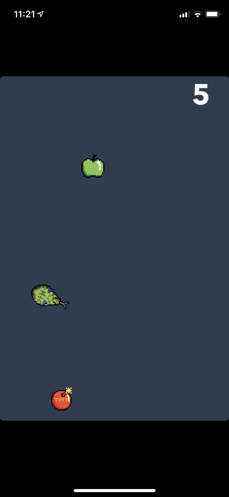

In preparation for my third year at UCT, I decided to learn C++ so that I can be prepared for my course in machine leaning which is done in C++. The focus of this was to learn how to compile and run C++ programs and the use of pointers and objects in C++.
Starting simple I decided to create my own Linked List. I created two versions, the first contains most of the implementation in the main function thus allowing me to focus on how to use pointers. I then remade the program using an object for my linked list which was defined in an external file. This step is important for the re-usability of the data structure.
I then moved on to a more complex data structure; the Binary Search Tree. This project meant an increased use of pointers although after making the linked list, this was not too difficult. However, I did need to make use of recursion for the printing of the nodes in the trees, which I had never done in C++ before.
To round off this learning experience I decided to replicate a small experiment which was done in second year using java where we compare the efficiency difference between a Binary Search Tree and a Linked List. For this I adjusted my data structures to record whenever a comparison operation occurs and be able to return that value. This was done because the it is a good indicator of the amount of work that needs to be done to search for data in the ds. Next I had to learn how to read data from a txt file to populate the data structures and then search for each node. The number of comparisons for each search is then printed when the program is run.
As a side note, each node is searched for but the order is random. I later realised that this is not necessary but it was interesting to learn how to best generate random numbers in C++.
Swift
As a long time iOS user I decided that I should probably know how the apps and games I use and play every day were made, so I made an app and then a game.
At the time when I decided to make this app I was just learning how to brew pour over coffee. The method worked great but it was very complicated and took some time to learn so I thought an app that tells you each of the steps and handles the timing for you would be perfect. This is a simple single view app where the user inputs the amount of coffee they want to brew, press start and the app walks them through the brewing process. This app was my first introduction to a view-controller application architecture. It involved the use of constraints the accurately place UI elements, different types of UI elements such as sliders and buttons and the use of built-in libraries to generate text-to-speech audio.
Considering iOS apps and what I had learned so far, a game seemed quite different compared. Having to deal with UI elements and their posistions, using parallelism to ensure smooth performance and needing to get input from the device's senors. So I decided to make a game. This game is a take on the traditional phone game 'Snake' except now the snake is moved my tilting the phone. To increase the score the snake needs to make contact with the food to "eat" it. The game ends if the snake hits a bomb. The game also includes power fruit which give bonus points.

HTML-CSS-JS
One of the biggest shortfalls of my degree was the complete lack of any web development. So to make up for this I decided to learn how to make my own websites and have them be deployed for anyone to view.
When looking for a simple place to start the issue of CV's came to mind. These days your CV needs to be really short and too the point, however there is so much information about me and what I can do that what can fit on one page. So decided to make a website detailing all my knowledge and achievements. This Website. :)
Soon after completing the first working version of my personal website, I remembered that my parents actually own their own domain for their medical practice. So I decided to work with them to develop a website detailing all the information about their business. This was an interesting new experience as now I had to consult with my "clients" to make the website the way they wanted as well as deal with user feedback. This website also needed as much SEO as I could implement along with the use of an API to include an interactive map to show the location of the business. The website also needed to be highly mobile friendly which required a higher use of Javascript to format the page based on the device it is being viewed on.
The site can be viewed at mediderm.co.za.
Java
The majority of my programming experience is in Java. I started programming in Java in grade 8 although I only really started to become proficient after I programmed full time for my IT class after grade 10. Furthermore most of my work for university has been in Java. My team and I have used Java in completing two hackathons.
This program was my team's submission to the 2020 Entelect University Cup Hackathon. The goal of the Hackathon was to write a program that stores a collection of Tetris-like blocks and given a grid with certain blocks already taken up the program needed to place as many shapes from the collection as possible. This was my first use of JSON which was an interesting new experience although this did take up a lot of our time. Our algorithm was simple, we randomly ordered the shapes in the collection and then went through the grid, point by point, attempting to add the first available shape, if it did not fit, we tried the next one, and so on. This submission earned us 8th place in the hackathon.
This application was my team's submission to the 2020 NASA SpaceApps Challenge. The task was to build the prototype for an app that would use data from NASA to help solve a global challenge. Our application uses satellite data to show on the world map where a wild fire might be, helping local governments put out the fire before it grows too big. The prototype used a fixed set of data and analysed the temperature and carbon-monoxide values for the location. This is scalable to include a stream of data and use machine learning to determine if those values correlate to a possible wild fire. When run the program displays a world map with red points which represent possible wildfires.